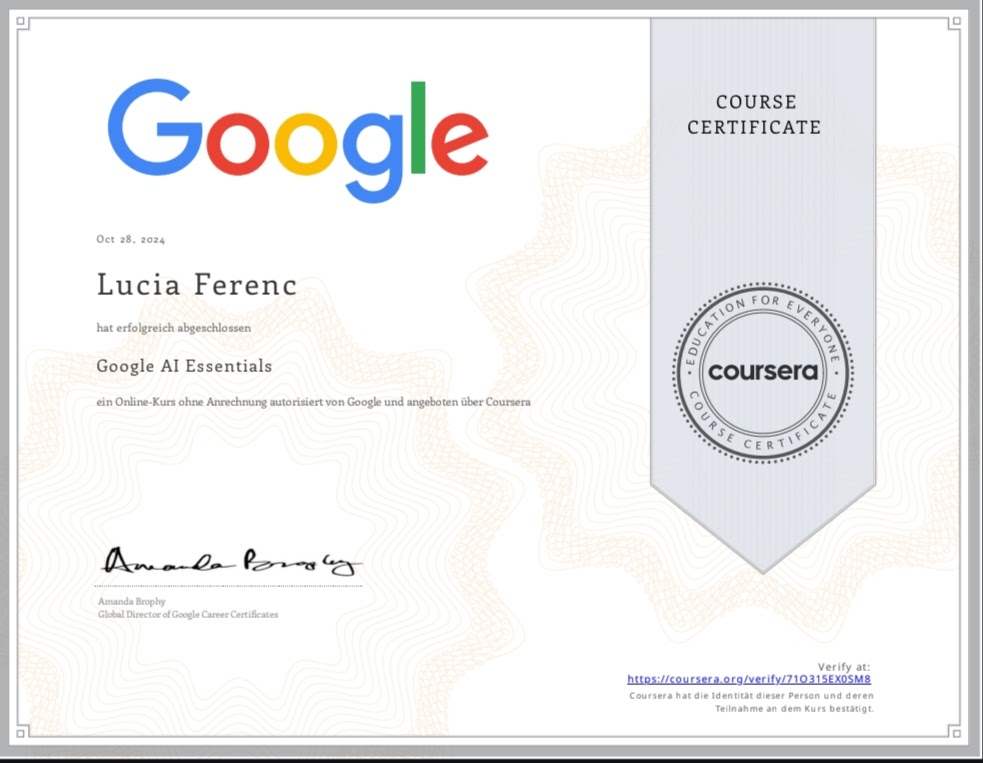
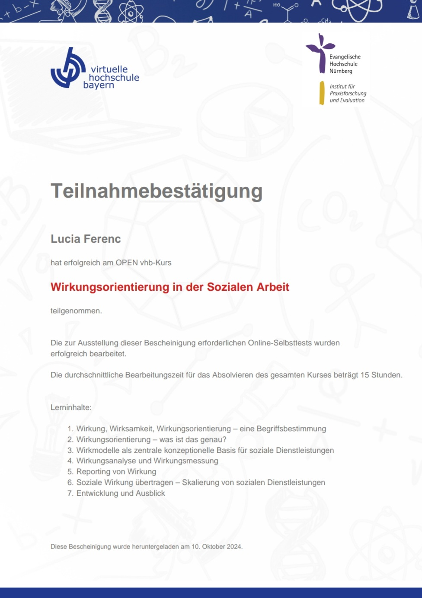
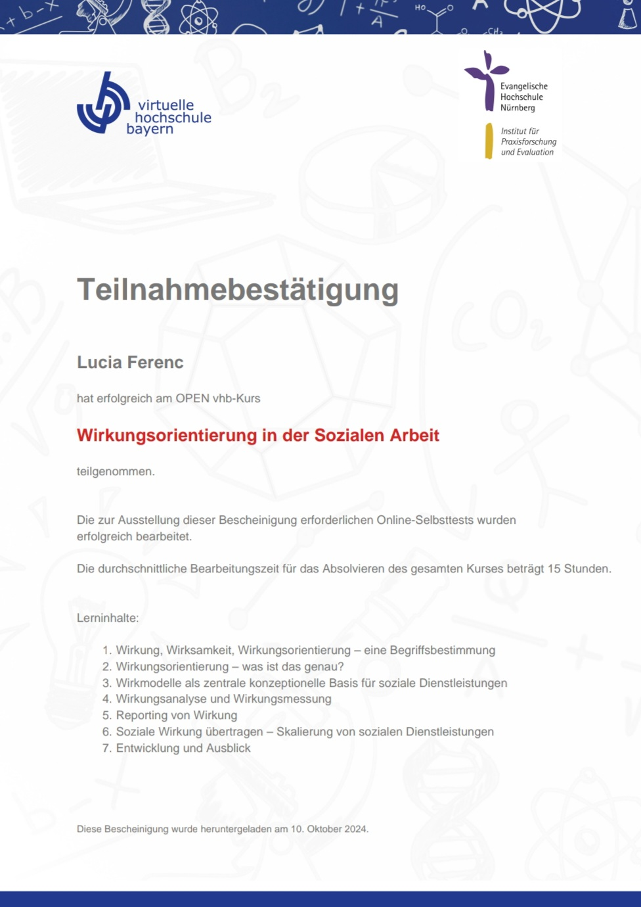

Volám sa Lucia Ferenc,som narodená v meste Topolcany(Slovenská Republika) dna 28.03.1990. Moje bydlisko je v meste Feldkirch. Toto malebné mesto sa nachádza v Rakúsku pri hraniciach s Lichtenstajnskom a Svajciarskom. Som matkou 9-rocného dievcatka, mám skvelého manzela a maleho psíka. Povolaním som profesionálna vodicka autobusu.
Vzdelanie
- 1996-2005: Základná skola Záriecie
- 2005-2008: Stredná odborná hotelová skola Púchov
- Juni 2008- September 2008: Opatrovatelský kurz - Cervený kríz
- Január 2021- Február 2021: po dvojrocnej praxi som mohla úspesne absolvovat skúsky s výucným listom:
Profesionálna vodicka autobusu z povolania
Pracovné skúsenosti
- Jún 2008-Dezember 2013: 24-hodinová opatrovatelka v Rakúsku na turnusy
- Január 2014- Máj 2015: postárka v krajine Rakúsko firma Post.at
- materská dovolenka
- Máj 2016 - August 2018: na ciastocný uväzok popri materskej dovolenke zamestnaná vo firme Schenker
ako pracovník v sklade, dalej na rozne úväzky,
ci polovicný alebo ciastocný vo firme Post, Xxxxlutz kým dcéra nebola väcsia
- August 2018: stále aktívny pracovný pomer vo firme Niggbus ako vodicka autobus
Kurzy a certifikáty

 
